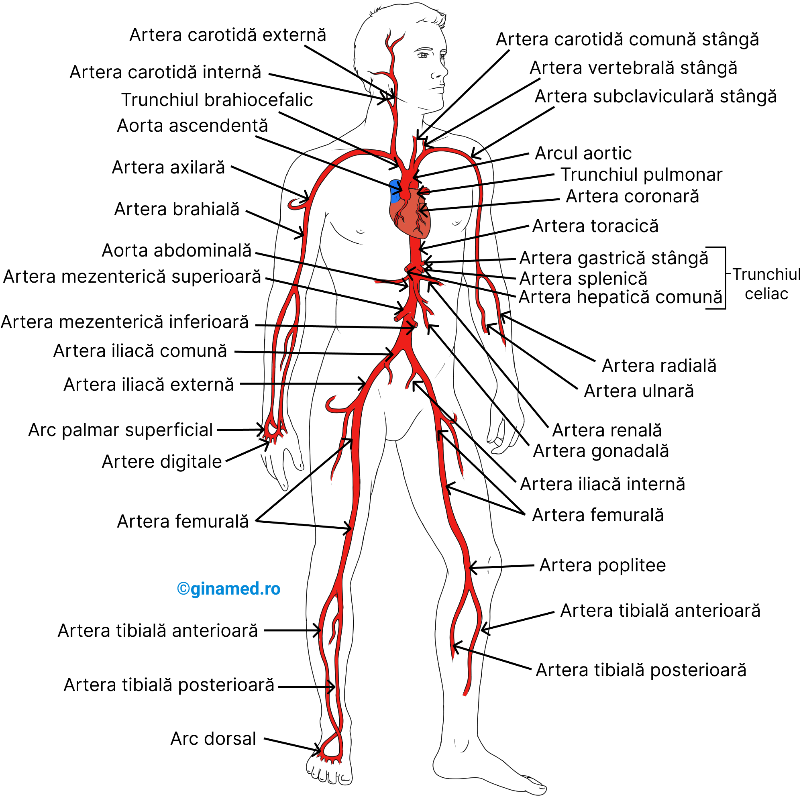
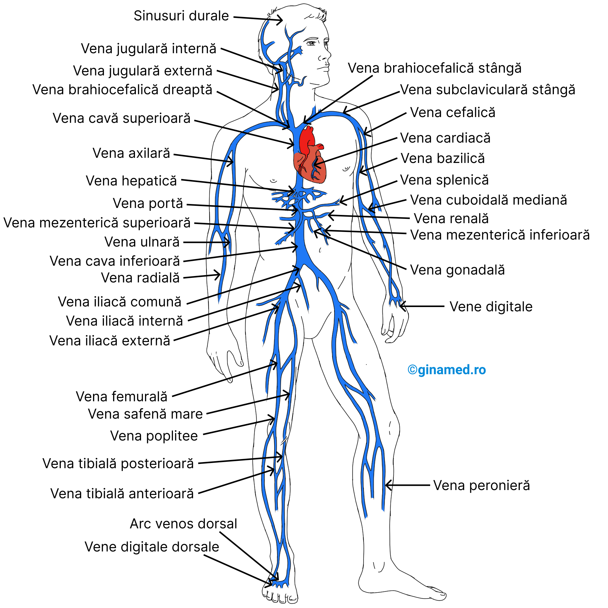

Structura și Funcția Lor
Vasele de sânge reprezintă o componentă esențială a sistemului circulator, formând o rețea vastă care transportă sângele în întreaga suprafață a corpului uman. Rolul lor principal este de a asigura distribuirea oxigenului, a nutrienților și a hormonilor către toate celulele organismului, precum și eliminarea dioxidului de carbon și a altor produse reziduale. Vasele de sânge sunt clasificate în trei tipuri principale: artere, vene și capilare, fiecare având caracteristici structurale și funcționale specifice.
Arterele
Arterele sunt vase de sânge care transportă sângele de la inimă către restul corpului. Acestea sunt caracterizate prin pereți groși și elastici, adaptați pentru a rezista presiunii ridicate generate de contracțiile inimii. Pereții arteriali sunt formați din trei straturi:
- Tunica intima: stratul intern, format din celule endoteliale care asigură o suprafață netedă pentru fluxul sanguin, prevenind formarea cheagurilor de sânge.
- Tunica media: stratul mijlociu, compus din mușchi neted și fibre elastice, care reglează diametrul arterelor și controlează presiunea sângelui prin vasoconstricție și vasodilatație.
- Tunica adventitia: stratul extern, alcătuit din țesut conjunctiv care oferă suport și protecție împotriva leziunilor mecanice.
Arterele majore, precum aorta, distribuie sângele oxigenat de la inimă spre arterele mai mici, care îlesî se ramifică în arteriole și capilare. Arterele coronare, de exemplu, au rolul esențial de a furniza sânge oxigenat direct mușchiului cardiac.

Venele
Venele transportă sângele înspătul inimii, de obicei sărac în oxigen, cu excepția venelor pulmonare care transportă sânge oxigenat de la plămâni. Pereții venelor sunt mai subțiri și mai puțin elastici comparativ cu arterele, deoarece presiunea sanguină este mai scăzută.
Un aspect distinctiv al venelor este prezența valvelor venoase, care previn refluxul sângelui și asigură circulația unidirecțională, mai ales în membrele inferioare, unde gravitația poate influența fluxul sanguin. Venele sunt ajutate de contracțiile mușchilor scheletici din jur, care acționează ca o pompă suplimentară. Venele se ramifică în venule, care colectează sângele din capilare și îl conduc către venele mai mari, precum vena cavă superioară și vena cavă inferioară, care transportă sângele înspătul inimii.

Capilare
Capilarele sunt cele mai mici și mai fine vase de sânge, formând o rețea densă care face legătura între arteriole și venule. Pereții capilarelor sunt extrem de subțiri, formati dintr-un singur strat de celule endoteliale, facilitând astfel schimburile de gaze, nutrienți și deșeuri între sânge și țesuturi. Există trei tipuri principale de capilare:
- Capilare continue: cu pereți compacți, care permit schimbul selectiv de substanțe, prezente în mușchi, creier și piele.
- Capilare fenestrate: cu mici pori care facilitează schimbul rapid de substanțe, prezente în organele endocrine, rinichi și intestin, unde este necesar un transport rapid al hormonilor și nutrienților.
- Capilare sinusoidale: cu spații mari între celulele endoteliale, permițând trecerea de celule și molecule mari, specifice ficatului, splinei și măduvei osoase, facilitând schimbul de celule sanguine și proteine mari.
Roluri Suplimentare ale Vaselor de Sânge
Pe lângă rolul lor fundamental în transportul sângelui, vasele de sânge contribuie la:
- Reglarea temperaturii corporale: prin dilatarea și constricția vaselor, organismul poate elibera sau conserva căldura.
- Distribuția hormonilor: vasele transportă hormoni secretați de glandele endocrine către organele și țesuturile țintă.
- Răspuns imun: circulația leucocitelor prin vasele de sânge permite detectarea și combaterea infecțiilor.